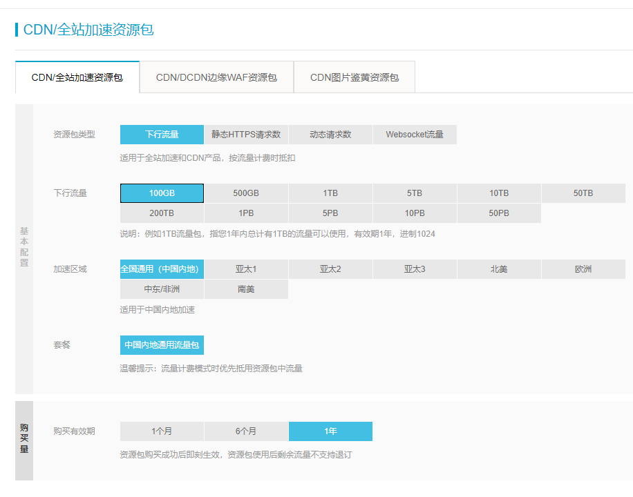
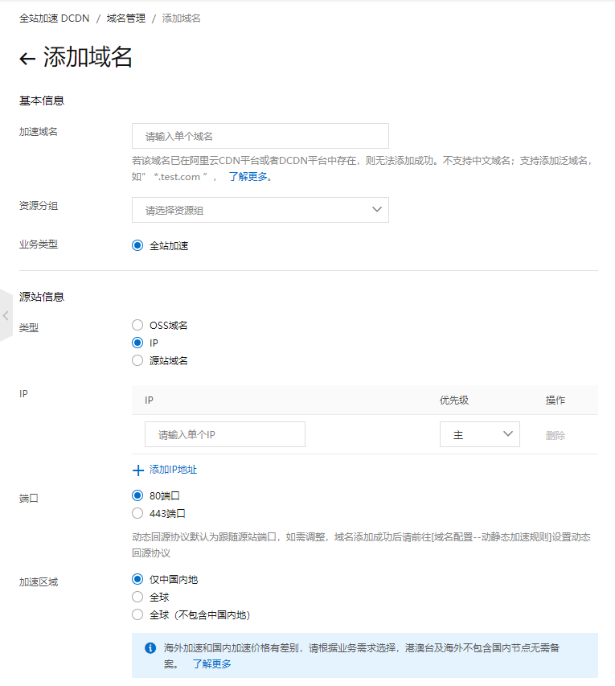

CDN是什么可以吃吗
许多人的个人主页可能会部署在GitHub Pages上，不过由于众所周知的原因，GitHub Pages的加载速度实在是堪忧，所以为了更好地面向国内的用户，我们可以考虑使用CDN进行加速。
什么事CDN呀
就像我们访问一些“不存在”的奇怪网站的时候，直接连接是不通的，需要一个代理来进行转发来科学上网一样，CDN是用来解决资源加载太慢的问题。与科学上网不同，CDN会在不同国家的节点上缓存自己网站的内容，对于已有的静态资源直接命中，未缓存的资源才会转发回源。而如今我们使用的，大多是全站加速DCDN，它可以使得动态资源也可以成功加速，这部分资源的加速类似于代理的请求模式。
CDN的资源包们
CDN常用的计费方式一般是按量计费（因为按带宽计费太贵了23333），对于最基本的用户来说，买个100GB/年的下行流量包就足够了，毕竟我们也不用于分发大型文件嘛。
我们在购买资源包的时候，发现还有其他几种资源包，比如静态HTTPS请求数和动态请求数资源包。
HTTPS请求数是云服务中比较恶心的东西（我感觉在请求过程中，对比不开HTTPS，就多了证书验证的部分啊，为啥还需要额外收费）。如果我们cdn不使用HTTPS的话，我们加载出来的网页就会告诉我们部分不安全（部分浏览器会有个黄色的锁），而网页所有资源全都是HTTPS协议请求的话，一般是绿色的锁。动态请求常见于链接里那些带着问号，后面跟着参数的URL，这个在DCDN里如果不设置忽略的话，这个就需要CDN去访问源网站求请求相关资源，消耗动态请求数。
不过好消息是，由于阿里的按量计费是每个小时进行结算的，他们规定“计费明细存在多小数位；汇总进位为2位小数时，产生的3位及以上小数的金额抹除”，这样其实就告诉我们，只要每个小时自己的消耗不超过1分钱，这个小时的请求费用就是免费的。本文编辑时（2021年2月16日），静态HTTPS请求数的按量计费是0.05元/10000次，也就是说只要每小时HTTPS使用不超过2000次就是免费的；动态请求数的按量计费是0.15元/10000次，也就是大约每小时666次以内是免费的。

值得注意的是，云服务商的CDN通常会要求在国内加速的域名要进行ICP备案。
配置一个全站加速
配置全站加速DCDN第一步，确保自己的加速域名已经通过了ICP备案，否则申请加速是通过不了的。
添加域名

我们在阿里云控制台的全站加速模块中，添加域名，我们需要配置源站的相关信息，源站就是cdn没有命中回源（即去哪里找）的网站，不应与加速域名相同（如果源站域名与加速域名相同，则cdn在找不到内容后会请求自己资源，而显然cdn自己没有这个资源，就会继续请求自己……这样cdn一直找不到源资源文件）。
假设我们的加速域名为example.com，想加速example.github.io的GitHub Pages，而且想即便访问example.github.io也可以重定向到example.com，我们应在GitHub Pages中配置CNAME为example.com，然后源站类型选择源站域名，填写example.github.io，端口443（HTTPS）。
在提交之后，我们需要设置回源HOST、静态文件（目录）、HTTPS等。
设置回源HOST
这一步是非常关键的一步，我就栽在这里一次。
回源HOST指全站加速节点在回源过程中，在源站访问的站点域名。
还是上面GitHub Pages的例子，我们需要设置HOST为加速域名，而不是example.github.io。如果选择example.github.io，GitHub会由于我们配置了CNAME，不给予资源文件，而是让cdn跳转到加速域名，导致无限循环。（参考blog）
配置静态文件类型/文件路径
这一步决定哪些文件会让cdn进行缓存（没缓存的会回源嘛）。一般我们会配置常见资源类型为图片文档等，我们也可以设置html,css等文件的缓存，而文件路径如果为/则表示网站的全部资源文件均需要进行缓存。
文件过期时间有几个默认的时间，我们可以按照自己实际情况酌情修改缓存时长。为了避免反复刷新缓存，变化可能比较快的资源建议缓存时长不要太大。
设置HTTPS
HTTPS如果开启必然会造成一笔不小的HTTPS请求资源消耗费用，这部分费用甚至会比流量费还要贵一些，但是开启后会比较安全，建议购买资源包后开启。
获取SSL证书
对于HTTPS，我们首先需要有一个加速域名的SSL证书。证书获取方式可以通过云服务商（推荐域名管理商或者CDN提供商，可以方便添加TXT解析或者方便证书的部署）获得的证书（通常为一年），或者Let’s encrypt的三个月证书。
可能有人问，为什么Let’s encrypt给的证书只有三个月有效期，根据官方的解释，90天可以减少证书错误分发及密钥泄漏导致的损失，也可以鼓励大家进行自动部署。
获取证书的步骤我应该还会再写一篇博客的吧见“聊聊证书”。
HTTP2、TLS、强制跳转与HSTS
HTTP2和新的TLS握手协议可以使得用户访问网站更加安全，比较建议打开。
强制跳转可以让以http协议访问的用户被自动跳转到HTTPS协议上，以防被中间人攻击。
而HSTS是告诉用户，未来x天内我这个域名只支持HTTPS协议。浏览器得知后，再以后的访问中无需跳转，浏览器会自动修改协议为HTTPS协议，减少被中间人攻击的可能。此外开启HSTS后，浏览器则不允许忽略证书错误，如果证书过期或者被攻击后，用户无法选择“忽略安全问题（不推荐）”来跳过这个错误，以免造成不必要的风险。
当然后两个开启会让HTTPS请求数进一步增加（原本是http的也HTTPS了），但是还是建议大家开启。
其他
- 在缓存配置-HTTP头中，我们可以自定义HTTP头。这个的使用就比如自定义
Access-Control-Allow-Origin。（这是一个跨域允许的HTTP头，我们在网站中通过引用或者ajax请求资源的时候，如果资源与访问域名不同，则属于跨域行为。如果请求的资源没有这个请求头则默认不允许跨域请求，强行请求会被浏览器拒绝；这个HTTP头的值为允许请求的域名，如为*则表示允许任意域名请求。）对于原网站不允许跨域的文件，我们可以自定义允许跨域的HTTP头，使得自己的域名允许被跨域访问。 - 访问控制中有一个URL鉴权和Referer防盗链，前者是需要适当的密钥进行请求资源，才能被cdn响应；后者是请求来源必须符合一定规则，但是referer只对浏览器请求有效，python访问甚至可以自定义referer。这两个综合起来的用途一般是只想在线播放，不希望用户下载的知识产权资源，可以通过后端返回合适的URL（写在前端就没用了），然后供在线浏览使用。